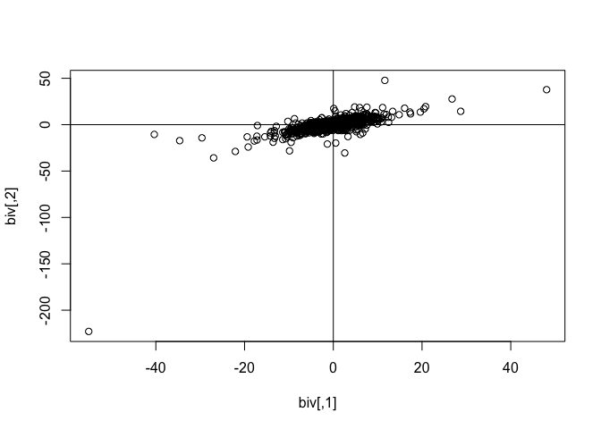

-
[dpr]mvss: multivariate subgaussian stable distributions -
[pr]mvlogis: multivariate logistic distributions
The goal of mvpd is to use product distribution theory to allow the numerical calculations of specific scale mixtures of the multivariate normal distribution. The multivariate subgaussian stable distribution is the product of the square root of a univariate positive stable distribution and the multivariate normal distribution (see Nolan (2013)).
Example
Generate 1000 draws from a random bivariate subgaussian stable distribution with alpha=1.71 and plot.
library(mvpd)
set.seed(2)
## basic example code
biv <- rmvss(n=1e3, alpha=1.71, Q=matrix(c(10,7.5,7.5,10),2))
head(biv)
#> [,1] [,2]
#> [1,] 3.17465324 4.122869
#> [2,] -3.26707008 -1.366920
#> [3,] -5.82800100 1.831774
#> [4,] -2.02463359 -3.749701
#> [5,] 0.01294963 3.042960
#> [6,] 1.73029594 3.812420
plot(biv); abline(h=0,v=0)